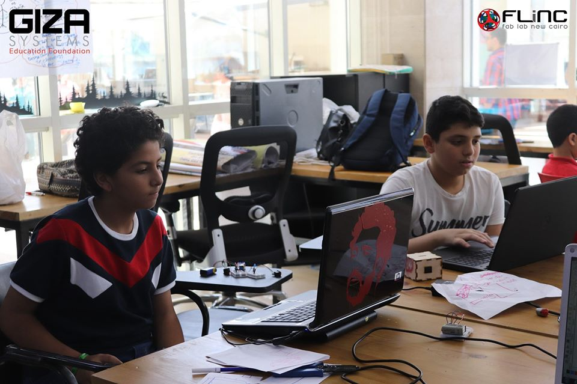
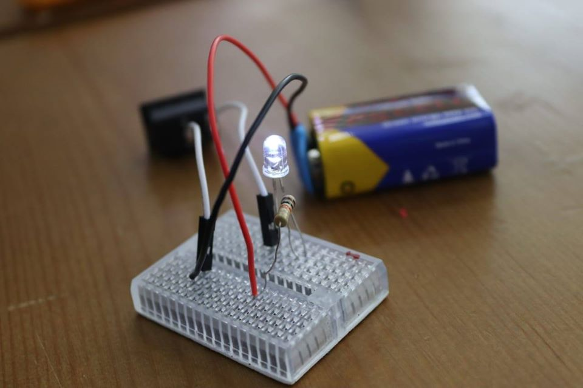
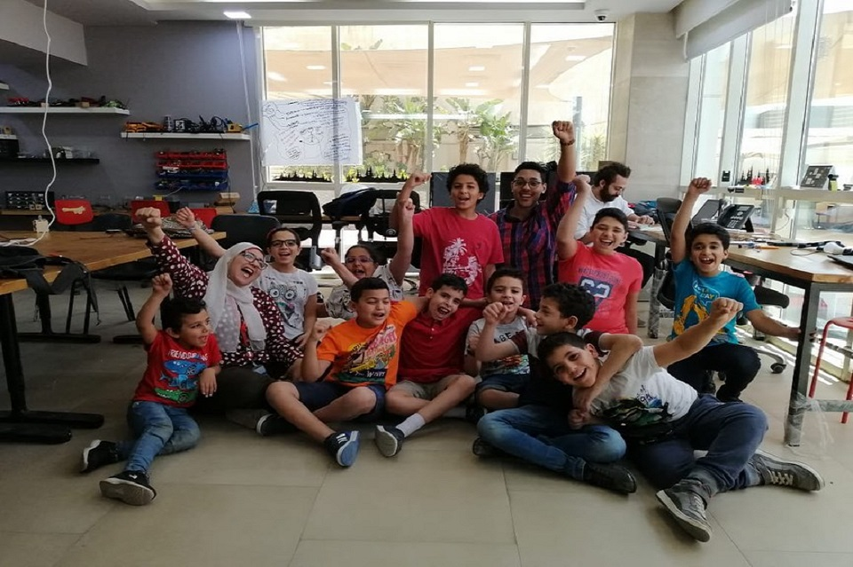

It is a 5-day workshop for children. It is about introducing the culture of recycling and resource management, by recycling the residues of materials such as wood and plastic to help with saving the environment and opening new doors for job opportunities. It also included how to implement their ideas by learning the process of engineering design using digital fabrication.
  © 2019 by Joseph Gourgy.